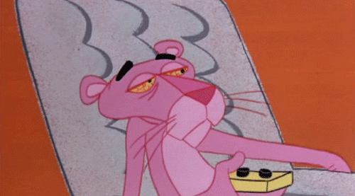
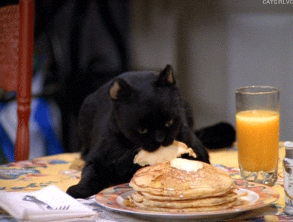
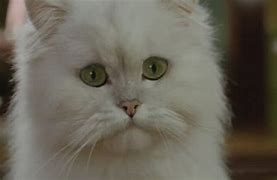
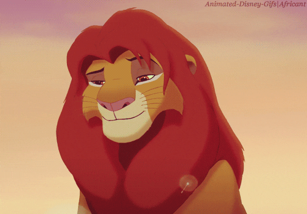
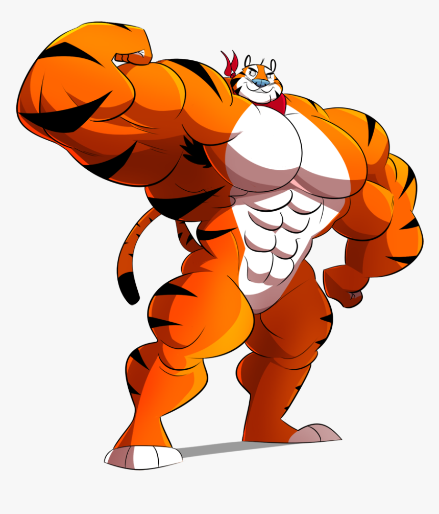

Felinos en la televisión
La pantera rosa
La Pantera Rosa (en inglés: The Pink Panther) es el nombre de un personaje de ficción, relacionado con la película de igual título, de 1963.
| Contacto | |
|---|---|
| Número | +1 202-918-2132 |
| panterarosa@gmail.com | |
| Dirección | 674 Casper Branch, Suite 553, 60769-7590, Myrlview, Maryland, United States |
Garfield

Garfield es el nombre de una tira de prensa creada por Jim Davis, que tiene como protagonistas al gato Garfield, al no muy brillante perro Odie, y a su dueño, el ingenuo Jon Arbuckle (Jon Bónachon en el doblaje hispanoamericano)
| Contacto | |
|---|---|
| Número | +1 202-918-2132 |
| garfiel@gmail.com | |
| Dirección | 674 Casper Branch, Suite 553, 60769-7590, Myrlview, Maryland, United States |
Salem Saberghagen (Sabrina)
Salem Saberhagen es un personaje ficticio de la serie de cómics estadounidense Sabrina the Teenage Witch propiedad de Archie Comics.
| Contacto | |
|---|---|
| Número | +1 202-918-2132 |
| salem@gmail.com | |
| Dirección | 674 Casper Branch, Suite 553, 60769-7590, Myrlview, Maryland, United States |
Felinos en el cine
Pelusa (Stuart Little)
Stuart Little (llamada ocasionalmente Stuart Little: Un ratón en la familia en Hispanoamérica) es una película estadounidense de comedia familiar del año 1999. Dirigida por Rob Minkoff y basada en el libro homónimo de E.B. White. (El gato es pelusa).
| Contacto | |
|---|---|
| Número | +1 202-918-2132 |
| pelusa@gmail.com | |
| Dirección | 674 Casper Branch, Suite 553, 60769-7590, Myrlview, Maryland, United States |
Simba (El rey leon)
Simba es el personaje protagonista de la trilogía de películas El rey león (1994), The Lion King II: Simba's Pride (1998) y El rey león 3: Hakuna Matata (2004) producidas por Walt Disney Pictures. Se trata de la personificación de un león africano.
| Contacto | |
|---|---|
| Número | +1 202-918-2132 |
| simbarey@gmail.com | |
| Dirección | 674 Casper Branch, Suite 553, 60769-7590, Myrlview, Maryland, United States |
Felinos en la publicidad
Tigre Toño
Tony the Tiger (en español: el Tigre Tony, también conocido en México como Tigre Toño) es la mascota de los cereales de desayuno Frosted Flakes de Kellogg's (Frosties en Europa y Zucaritas en Latinoamérica) que aparece en el embalaje y publicidad.
| Contacto | ||
|---|---|---|
| Número | +1 202-918-2132 | +1 202-918-2132 |
| tigre@gmail.com | +1 202-918-2132 | |
| Dirección | 674 Casper Branch, Suite 553, 60769-7590, Myrlview, Maryland, United States | +1 202-918-2132 |
| tablas | de | 4 filas |